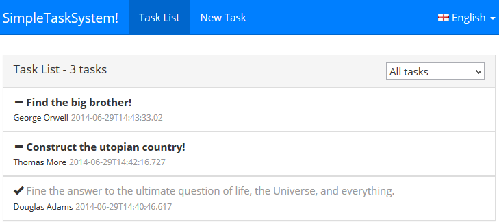
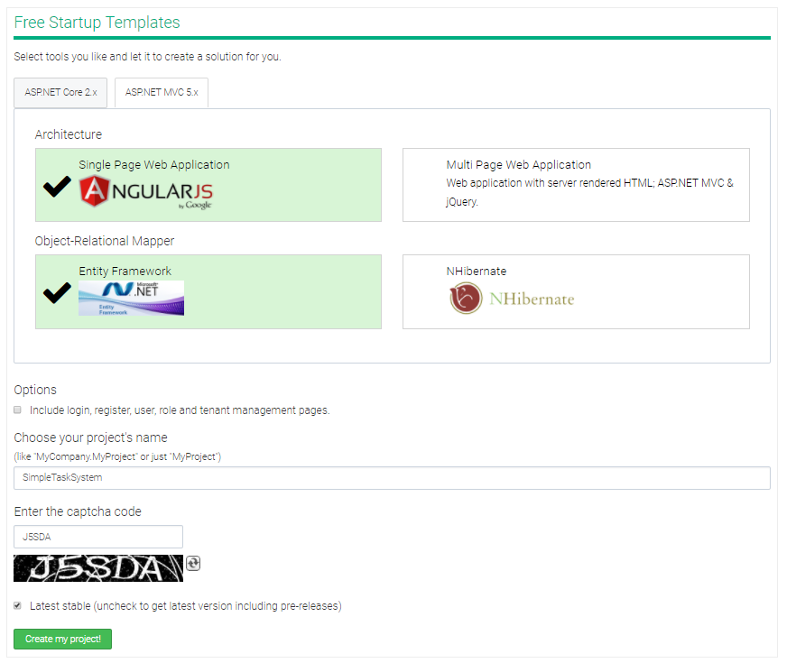
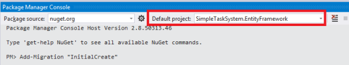
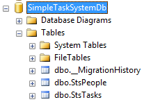
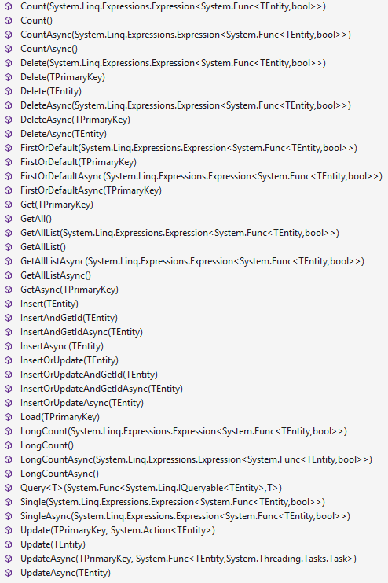

A screenshot of the sample application.
In this article, I'll show you how to develop a Single-Page Web Application (SPA) from ground to up using the following tools:
ASP.NET Boilerplate [1] is an open source application framework that combines all of these frameworks and libraries to make you start easily to develop your application. It provides us an infrastructure to develop applications in best practices. It naturally supports Dependency Injection, Domain Driven Design and Layered Architecture. The sample application also implements validation, exception handling, localization and responsive design.
ASP.NET Boilerplate saves our time while starting a new application by providing templates that combines and configures best tools to build enterprise level web applications.
Let's go to aspnetboilerplate.com/Templates to build our application from template...

Here, I selected ASP.NET MVC 5.x, SPA (Single Page Application) with AngularJS and EntityFramework. Also entered SimpleTaskSystem for my project name. I didn't want to include authentication options to get the most simple project template. It created and downloaded my solution.
There are five projects included in the solution. Core project for domain (business) layer, Application project for application layer, WebApi project to implement Web Api controllers, Web project for presentation layer and finally EntityFramework project for EntityFramework implementation.
Note: If you download sample solution for this acticle, you will see 7 projects in the solution. I improved template to support NHibernate and Durandal also for same application. If you don't interest in NHibernate or Durandal, just ignore these 2 projects.
I'm creating a simple application to create tasks and assing these tasks to people. So, I need Task and Person entities.
Task entity simply defines a Description, CreationTime and a State for a Task. It also has an optional reference to a Person (AssignedPerson):
public class Task : Entity<long>
{
[ForeignKey("AssignedPersonId")]
public virtual Person AssignedPerson { get; set; }
public virtual int? AssignedPersonId { get; set; }
public virtual string Description { get; set; }
public virtual DateTime CreationTime { get; set; }
public virtual TaskState State { get; set; }
public Task()
{
CreationTime = DateTime.Now;
State = TaskState.Active;
}
}
Person entity is simpler and just defines Name of the person:
public class Person : Entity
{
public virtual string Name { get; set; }
}
ASP.NET Boilerplate provides Entity class that defines Id poperty. I derived entities from this Entity class. Task class has an Id of type long since I derived from Entity<long>. Person class has an Id of type int. Since int is the default primary key type, I did not specified it.
I defined entities in the Core project since Entities are parts of domain/business layer.
As you know, EntityFramework works with DbContext class. We should first define it. ASP.NET Boilerplate template creates a DbContext template for us. I just added IDbSets for Task and Person. This is my DbContext class:
public class SimpleTaskSystemDbContext : AbpDbContext
{
public virtual IDbSet<Task> Tasks { get; set; }
public virtual IDbSet<Person> People { get; set; }
public SimpleTaskSystemDbContext()
: base("Default")
{
}
public SimpleTaskSystemDbContext(string nameOrConnectionString)
: base(nameOrConnectionString)
{
}
}
It uses Default connection string in web.config. It's defined as shown below:
<add name="Default" connectionString="Server=localhost; Database=SimpleTaskSystem; Trusted_Connection=True;" providerName="System.Data.SqlClient" />
We'll use EntityFramework's Code First Migrations to create and maintain the database schema. ASP.NET Boilerplate template has enabled migrations by default and added a Configuration class as shown below:
internalinternal sealed class Configuration : DbMigrationsConfiguration<SimpleTaskSystem.EntityFramework.SimpleTaskSystemDbContext>
{
public Configuration()
{
AutomaticMigrationsEnabled = false;
}
protected override void Seed(SimpleTaskSystem.EntityFramework.SimpleTaskSystemDbContext context)
{
context.People.AddOrUpdate(
p => p.Name,
new Person {Name = "Isaac Asimov"},
new Person {Name = "Thomas More"},
new Person {Name = "George Orwell"},
new Person {Name = "Douglas Adams"}
);
}
}
In the Seed method, I added four people for initial data. Now, I'll create the initial migration. I opened Package Manager Console and typed the following command:

Add-Migration "InitialCreate" command creates a class named InitialCreate as shown below:
public partial class InitialCreate : DbMigration
{
public override void Up()
{
CreateTable(
"dbo.StsPeople",
c => new
{
Id = c.Int(nullable: false, identity: true),
Name = c.String(),
})
.PrimaryKey(t => t.Id);
CreateTable(
"dbo.StsTasks",
c => new
{
Id = c.Long(nullable: false, identity: true),
AssignedPersonId = c.Int(),
Description = c.String(),
CreationTime = c.DateTime(nullable: false),
State = c.Byte(nullable: false),
})
.PrimaryKey(t => t.Id)
.ForeignKey("dbo.StsPeople", t => t.AssignedPersonId)
.Index(t => t.AssignedPersonId);
}
public override void Down()
{
DropForeignKey("dbo.StsTasks", "AssignedPersonId", "dbo.StsPeople");
DropIndex("dbo.StsTasks", new[] { "AssignedPersonId" });
DropTable("dbo.StsTasks");
DropTable("dbo.StsPeople");
}
}
We did create needed classes to create the database, but not created the database yet. To do it, I'll run the following command:
PM> Update-Database
This command runs migrations, creates the database and populates the initial data for us:

When we change Entitiy classes, we can easily create new migration classes using Add-Migration command and update the database with Update-Database command. To learn more about database migrations, see entity framework's documentation.
In domain driven design, repositories used to implement database-specific codes. ASP.NET Boilerplate creates an automatic repository for each entity using generic IRepository interface. IRepository defines common methods for select, insert, update, delete and a few more:

We can extend these repository upon our needs. I will extend it to create a Task repository. As I want to separate interface from implementation, I declare interfaces for repositories first. Here, is the Task repository interface:
public interface ITaskRepository : IRepository<Task, long>
{
List<Task> GetAllWithPeople(int? assignedPersonId, TaskState? state);
}
It extends generic IRepository interface of ASP.NET Boilerplate. So, ITaskRepository inherently defines all these methods as default. It can also add it's own methods as I defined GetAllWithPeople(...).
No need to create a repository for Person since default methods are enough for me. ASP.NET Boilerplate provides a way of injecting generic repositories without creating a repository class. We will see it in TaskAppService class in 'Build application services' section..
I defined repository interfaces in the Core project since they are parts of domain/business layer.
We should implement the ITaskRepository interface defined above. I'm implementing repositories in EntityFramework project. Thus, domain layer becomes completely independent from EntityFramework.
When we created the project template, ASP.NET Boilerplate defined a generic base class for repositories in our project: SimpleTaskSystemRepositoryBase. It's a good practice to have such a base class since we can later add some common methods for our repositories. You can see definition of this class in the code. I just derive from it for TaskRepository implementation:
public class TaskRepository : SimpleTaskSystemRepositoryBase<Task, long>, ITaskRepository
{
public TaskRepository(IDbContextProvider<SimpleTaskSystemDbContext> dbContextProvider)
: base(dbContextProvider)
{
}
public List<Task> GetAllWithPeople(int? assignedPersonId, TaskState? state)
{
//In repository methods, we do not deal with create/dispose DB connections, DbContexes and transactions. ABP handles it.
var query = GetAll(); //GetAll() returns IQueryable<T>, so we can query over it.
//var query = Context.Tasks.AsQueryable(); //Alternatively, we can directly use EF's DbContext object.
//var query = Table.AsQueryable(); //Another alternative: We can directly use 'Table' property instead of 'Context.Tasks', they are identical.
//Add some Where conditions...
if (assignedPersonId.HasValue)
{
query = query.Where(task => task.AssignedPerson.Id == assignedPersonId.Value);
}
if (state.HasValue)
{
query = query.Where(task => task.State == state);
}
return query
.OrderByDescending(task => task.CreationTime)
.Include(task => task.AssignedPerson) //Include assigned person in a single query
.ToList();
}
}
TaskRepository is derived from SimpleTaskSystemRepositoryBase and implements ITaskRepository we defined above.
GetAllWithPeople is our specific method to get tasks where AssignedPerson included (pre-fetched) and optionally filtered by some conditions. We can freely use Context (EF's DBContext) object and database in repositories. ASP.NET Boilerplate manages database connection, transaction, creating and disposing the DbContext for us (See documentation for more information)
Application services is used to separate presentation layer from domain layer by providing façade style methods. I defined application services in the Application assembly in the project. First, I define interface for task application service:
public interface ITaskAppService : IApplicationService
{
GetTasksOutput GetTasks(GetTasksInput input);
void UpdateTask(UpdateTaskInput input);
void CreateTask(CreateTaskInput input);
}
ITaskAppService extends IApplicationService. Thus, ASP.NET Boilerplate automatically provides some features for this class (like dependency injection and validation). Now, let's implement ITaskAppService:
public class TaskAppService : ApplicationService, ITaskAppService
{
//These members set in constructor using constructor injection.
private readonly ITaskRepository _taskRepository;
private readonly IRepository<Person> _personRepository;
/// <summary>
///In constructor, we can get needed classes/interfaces.
///They are sent here by dependency injection system automatically.
/// </summary>
public TaskAppService(ITaskRepository taskRepository, IRepository<Person> personRepository)
{
_taskRepository = taskRepository;
_personRepository = personRepository;
}
public GetTasksOutput GetTasks(GetTasksInput input)
{
//Called specific GetAllWithPeople method of task repository.
var tasks = _taskRepository.GetAllWithPeople(input.AssignedPersonId, input.State);
//Used AutoMapper to automatically convert List<Task> to List<TaskDto>.
return new GetTasksOutput
{
Tasks = Mapper.Map<List<TaskDto>>(tasks)
};
}
public void UpdateTask(UpdateTaskInput input)
{
//We can use Logger, it's defined in ApplicationService base class.
Logger.Info("Updating a task for input: " + input);
//Retrieving a task entity with given id using standard Get method of repositories.
var task = _taskRepository.Get(input.TaskId);
//Updating changed properties of the retrieved task entity.
if (input.State.HasValue)
{
task.State = input.State.Value;
}
if (input.AssignedPersonId.HasValue)
{
task.AssignedPerson = _personRepository.Load(input.AssignedPersonId.Value);
}
//We even do not call Update method of the repository.
//Because an application service method is a 'unit of work' scope as default.
//ABP automatically saves all changes when a 'unit of work' scope ends (without any exception).
}
public void CreateTask(CreateTaskInput input)
{
//We can use Logger, it's defined in ApplicationService class.
Logger.Info("Creating a task for input: " + input);
//Creating a new Task entity with given input's properties
var task = new Task { Description = input.Description };
if (input.AssignedPersonId.HasValue)
{
task.AssignedPersonId = input.AssignedPersonId.Value;
}
//Saving entity with standard Insert method of repositories.
_taskRepository.Insert(task);
}
}
TaskAppService uses repositories for database operations. It gets references in it's constructor via constructor injection pattern. ASP.NET Boilerplate naturally implements dependency injection, so we can use constructor injection or property injection freely (See more on dependency injection in ASP.NET Boilerplate documentation).
Notice that we're using PersonRepository by injecting IRepository<Person>. ASP.NET Boilerplate automatically creates repositories for our entities. If default methods of IRepository enough for us, we don't have to create repository classes.
Application service methods works with Data Transfer Objects (DTOs). It's a best practice and I definitely suggest to use this pattern. But you don't have to do it as long as you can deal with problems of exposing Entities to presentation layer.
In the GetTasks method, I used the GetAllWithPeople method that I implemented before. It returns a List<Task> but I need to return a List<TaskDto> to presentation layer. AutoMapper helps us here to automatically convert Task objects to TaskDto objects. GetTasksInput and GetTasksOutput are special DTOs defined for GetTasks method.
In the UpdateTask method, I retrieved the Task from database (using IRepository's Get method) and changed peoperties of the Task. Notice that I did not even called Update method of the repository. ASP.NET Boilerplate implements UnitOfWork pattern. So, all changes in an application service method are a unit of work (atomic) and applied to database at the end of the method automatically.
In the CreateTask method, I simply created a new Task and inserted to database using the IRepository's Insert method.
ASP.NET Boilerplate's ApplicationService class has some properties to make developing application services easier. For example, it defines a Logger property for logging. So, we derived TaskAppService from ApplicationService and used it's Logger property here. It's optional to derive from this class but required to implement IApplicationService (notice that ITaskAppService extends IApplicationService).
ASP.NET Boilerplate automatically validates inputs of application service methods. CreateTask method gets CreateTaskInput as parameter:
public class CreateTaskInput
{
public int? AssignedPersonId { get; set; }
[Required]
public string Description { get; set; }
public override string ToString()
{
return string.Format("[CreateTaskInput > AssignedPersonId = {0}, Description = {1}]", AssignedPersonId, Description);
}
}
Here, Description is marked as Required. You can use any Data Annotation attributes here. If you want to make some custom validation, you can implement ICustomValidate as I implemented in UpdateTaskInput:
public class UpdateTaskInput : ICustomValidate
{
[Range(1, long.MaxValue)]
public long TaskId { get; set; }
public int? AssignedPersonId { get; set; }
public TaskState? State { get; set; }
public void AddValidationErrors(List<ValidationResult> results)
{
if (AssignedPersonId == null && State == null)
{
results.Add(new ValidationResult("Both of AssignedPersonId and State can not be null in order to update a Task!", new[] { "AssignedPersonId", "State" }));
}
}
public override string ToString()
{
return string.Format("[UpdateTask > TaskId = {0}, AssignedPersonId = {1}, State = {2}]", TaskId, AssignedPersonId, State);
}
}
AddValidationErrors method is the place you can write your custom validation code.
Note that we did not handled any exception. ASP.NET Boilerplate automatically handles exceptions, logs and returns an appropriate error message to the client. Also, in client side, handles these error messages and show to the user. Actually, this is true for ASP.NET MVC and Web API Controller actions. Since we will expose the TaskAppService using Web API, we don't need to handle exceptions. See exception handling document for details.
I want to expose my application services to remote clients. Thus, my AngularJS application can easily call these service methods using AJAX.
ASP.NET Boilerplate provides an automatic way of exposing application service methods as ASP.NET Web API. I just use DynamicApiControllerBuilder as shown below:
DynamicApiControllerBuilder
.ForAll<IApplicationService>(Assembly.GetAssembly(typeof (SimpleTaskSystemApplicationModule)), "tasksystem")
.Build();
For this example, ASP.NET Boilerplate finds all interfaces inherits IApplicationService in Application layer assembly and creates a web api controller for each application service class. There are alternative syntaxes for fine control. We'll see how to call these services via AJAX.
I'll implement a Single-Page Web Application as user interface of my project. AngularJS (by Google) is one (propably the top one) of the most used SPA frameworks.
ASP.NET Boilerplate provides a template that makes easy to start with AngularJS. The template has two pages (Home and About) with smooth transition between pages. Uses Twitter Bootstrap as HTML/CSS framework (thus, it's responsive). It's also localized into English and Turkish with ASP.NET Boilerplate's localization system (You can easly add other languages or remove one of them).
We first change route of the template. ASP.NET Boilerplate template uses AngularUI-Router, the de-facto standard router of AngularJS. It provides state based routing modal. We will have two views: task list and new task. So, we will change route definition in app.js as shown below:
app.config([
'$stateProvider', '$urlRouterProvider',
function ($stateProvider, $urlRouterProvider) {
$urlRouterProvider.otherwise('/');
$stateProvider
.state('tasklist', {
url: '/',
templateUrl: '/App/Main/views/task/list.cshtml',
menu: 'TaskList' //Matches to name of 'TaskList' menu in SimpleTaskSystemNavigationProvider
})
.state('newtask', {
url: '/new',
templateUrl: '/App/Main/views/task/new.cshtml',
menu: 'NewTask' //Matches to name of 'NewTask' menu in SimpleTaskSystemNavigationProvider
});
}
]);
app.js is the main JavaScript file to configure and start our SPA. Notice that we're using cshtml files as views! Normally, html files are used as views in AngularJS. ASP.NET Boilerplate makes it possible to use cshtml files. Thus we will have the power of razor engine to generate HTML.
ASP.NET Boilerplate provides an infrastructure to create and show menus in an application. It allows to define menu in C# and use same menu both in C# and JavaScript. See SimpleTaskSystemNavigationProvider class for creating menu and see header.js/header.cshtml for showing menu in the angular way.
First, I'm creating an Angular controller for the task list view:
(function() {
var app = angular.module('app');
var controllerId = 'sts.views.task.list';
app.controller(controllerId, [
'$scope', 'abp.services.tasksystem.task',
function($scope, taskService) {
var vm = this;
vm.localize = abp.localization.getSource('SimpleTaskSystem');
vm.tasks = [];
$scope.selectedTaskState = 0;
$scope.$watch('selectedTaskState', function(value) {
vm.refreshTasks();
});
vm.refreshTasks = function() {
abp.ui.setBusy( //Set whole page busy until getTasks complete
null,
taskService.getTasks({ //Call application service method directly from JavaScript
state: $scope.selectedTaskState > 0 ? $scope.selectedTaskState : null
}).success(function(data) {
vm.tasks = data.tasks;
})
);
};
vm.changeTaskState = function(task) {
var newState;
if (task.state == 1) {
newState = 2; //Completed
} else {
newState = 1; //Active
}
taskService.updateTask({
taskId: task.id,
state: newState
}).success(function() {
task.state = newState;
abp.notify.info(vm.localize('TaskUpdatedMessage'));
});
};
vm.getTaskCountText = function() {
return abp.utils.formatString(vm.localize('Xtasks'), vm.tasks.length);
};
}
]);
})();
I defined name of the controller as 'sts.views.task.list'. This my convention (for scalable code-base) but you can simply name it as 'ListController'. AngularJS also uses dependency injection. We're injecting '$scope' and 'abp.services.tasksystem.task' here. First one is Angular's scope variable, second one is the automatically created JavaScript service proxy for ITaskAppService (we built it before in 'Build Web API services' section).
ASP.NET Boilerplate provides infrastructure to use same localization texts both in server and client (see it's documentation for details).
vm.taks is the list of tasks that will be shown in the view. vm.refreshTasks method fills this array by getting tasks using taskService. It's called when selectedTaskState changes (observed using $scope.$watch).
As you see, calling an application service method is very easy and straightforward! This is a feature of ASP.NET Boilerplate. It generates Web API layer and JavaScript proxy layer that talks with this Web API layer. Thus, we are calling the application service method as calling a simple JavaScript method. It is completely integrated with AngularJS (uses Angular's $http service).
Let's see the view side of task list:
<div class="panel panel-default" ng-controller="sts.views.task.list as vm">
<div class="panel-heading" style="position: relative;">
<div class="row">
<!-- Title -->
<h3 class="panel-title col-xs-6">
@L("TaskList") - <span>{{vm.getTaskCountText()}}</span>
</h3>
<!-- Task state combobox -->
<div class="col-xs-6 text-right">
<select ng-model="selectedTaskState">
<option value="0">@L("AllTasks")</option>
<option value="1">@L("ActiveTasks")</option>
<option value="2">@L("CompletedTasks")</option>
</select>
</div>
</div>
</div>
<!-- Task list -->
<ul class="list-group" ng-repeat="task in vm.tasks">
<div class="list-group-item">
<span class="task-state-icon glyphicon" ng-click="vm.changeTaskState(task)" ng-class="{'glyphicon-minus': task.state == 1, 'glyphicon-ok': task.state == 2}"></span>
<span ng-class="{'task-description-active': task.state == 1, 'task-description-completed': task.state == 2 }">{{task.description}}</span>
<br />
<span ng-show="task.assignedPersonId > 0">
<span class="task-assignedto">{{task.assignedPersonName}}</span>
</span>
<span class="task-creationtime">{{task.creationTime}}</span>
</div>
</ul>
</div>
ng-controller attribute (in the first line) binds the controller to the view. @L("TaskList") gets localized text for "task list" (works on server while rendering HTML). It's possible since this is a cshtml file.
ng-model binds combobox and the JavaScript variable. When the variable changes, the combobox updated. When the combobox changes, the valiable is updated. This is two-way binding of AngularJS.
ng-repeat is another 'directive' of Angular that is used to render same HTML for each value in an array. When the array changes (an item is added for example), it's automatically reflected to the view. This is another powerful feature of AngularJS.
Note: When you add a JavaScript file (for example, for the 'task list' controller), you should add it to your page. This can be done by adding it to Home\Index.cshtml in the template.
ASP.NET Boilerplate provides a flexible and strong localization system. You can use XML files or Resource files as localization source. You can also define custom localization sources. See documentation for more. In this sample application, I used XML files (it's under Localization folder in web application):
<?xml version="1.0" encoding="utf-8" ?>
<localizationDictionary culture="en">
<texts>
<text name="TaskSystem" value="Task System" />
<text name="TaskList" value="Task List" />
<text name="NewTask" value="New Task" />
<text name="Xtasks" value="{0} tasks" />
<text name="AllTasks" value="All tasks" />
<text name="ActiveTasks" value="Active tasks" />
<text name="CompletedTasks" value="Completed tasks" />
<text name="TaskDescription" value="Task description" />
<text name="EnterDescriptionHere" value="Task description" />
<text name="AssignTo" value="Assign to" />
<text name="SelectPerson" value="Select person" />
<text name="CreateTheTask" value="Create the task" />
<text name="TaskUpdatedMessage" value="Task has been successfully updated." />
<text name="TaskCreatedMessage" value="Task {0} has been created successfully." />
</texts>
</localizationDictionary>
ASP.NET Boilerplate is designed to be testable. I authored an article to show unit and integration testing for ABP based projects. See the article: Unit testing in C# using xUnit, Entity Framework, Effort and ASP.NET Boilerplate.
You can get the latest source code here https://github.com/aspnetboilerplate/aspnetboilerplate-samples/tree/master/SimpleTaskSystem
In this article, I demonstrated how to develop an NLayered ASP.NET MVC web application with a SPA and responsive user interface. I used ASP.NET Boilerplate since it makes easy to develop such applications using best practices and saves our time. Use these links for moe:
[1] ASP.NET Boilerplate official website: http://www.aspnetboilerplate.com